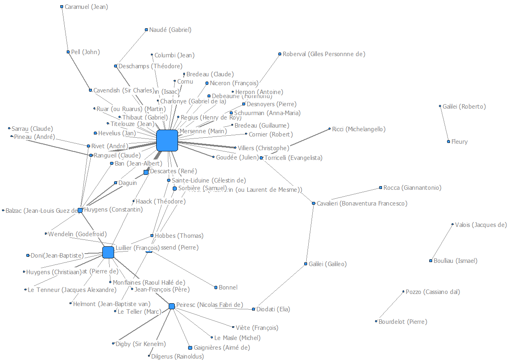
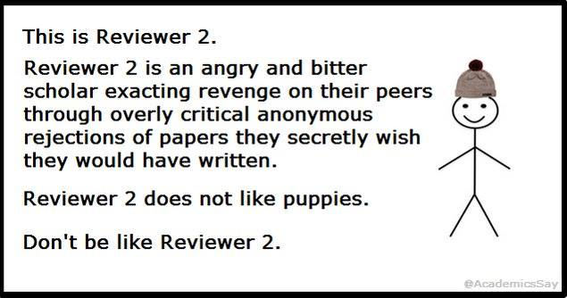
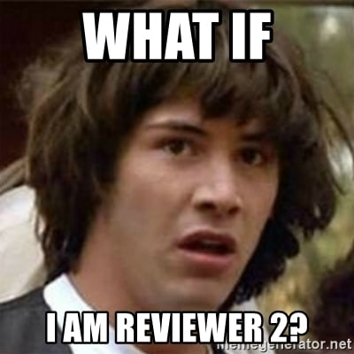

3 Journals, peer-review, and the organization and evaluation of research
3.1 The organization of research
Today’s research is largely done in universities, but it was not always so. Before the adoption of the Humboldt model of universities (as institutions of research and teaching) in Germany in the early 19th century and its subsequent generalization, research was mainly organized by academies, which initially operated like clubs funded by their members: an international group of science amateurs. I highlight the word amateur here since the professional status of the scientist as it is understood today is a relatively recent historical development.
Although there is a stereotype of the scientist as a mad professor alone his laboratory, history shows that science has always been a collective effort. The first scientific societies – which were more like private clubs – were formed in the 1600s in some of Europe’s major cities. Most of these clubs evaluated research and technology on behalf of their monarch, such as The Royal Society of London, which is the oldest scientific academy to still exist today. Founded in 1660, the Royal Society became a publishing venue for scientific ideas and reports, and was critical in the formation of a scholarly communication network throughout Europe.
Also founded in 1660 was the Académie des Sciences in Paris. Unlike London’s Royal Society, which was not financially supported by the monarchy, the Paris academy awarded government stipends to a small group of scientists. These stipends helped legitimize science as a profession while drawing upon the vast resources of the kingdom, and by the 1700s, being elected to the Académie des Sciences carried great prestige and financial assurances. As with the Royal Society, the Académie des Sciences paved the way for scientific publication by publishing proceedings from its meetings.
Despite these scientists’ supposed interest in attaining enlightenment, they were as discriminatory as anybody else from back then, allowing mostly prominent citizens from noble families into these early societies. The first woman was admitted into the Royal Society as late as 1945. There’s no way to measure how much greater our knowledge would be if early scientific clubs had been open to all citizens.
Nonetheless, the emergence of the Royal Academy and the Académie des Sciences inspired other aspiring scientists throughout Europe. Societies became a crucial part of science, allowing researchers to coordinate and evaluate their efforts.
If you want to know more about the Royal Society of London, you can check out their website: https://royalsociety.org/about-us/history/
The institutionalization of science took place gradually over the last 2 centuries and greatly accelerated after World War I and World War II, which brought scientific development (which played a decisive role in the outcome of the war) to the forefront of national priorities. While the international scientific community had long existed and transcended geopolitical boundaries, governments came to realize the importance of developing a national research capacity to decrease their reliance on other countries for the production and application of new knowledge. This contributed to the massification of research and higher education, as well as the proliferation of universities and university professors, effectively operating a full transition from science as a hobby to science as a profession.
3.2 Scholarly communications before scholarly journals
Written works can be disseminated, copied, verified and referenced. they can contain detailed information, including images and figures. They establish priority in discoveries, can be used to generate a record of the scientific knowledge that does not die with the scientists.
If you have ever wondered what people did all day before the internet, you probably have the impression (maybe from Bridgerton) that they just wrote letters all day long. Thus, it is not surprising that the earliest scholarly communication took place through letter writing (“personal correspondence,” if you’re fancy.)
Scientists spread the news of observations and ongoing experiments through letters written to other scientists. Letters were a part of daily life due to their convenience, low cost, and lack of censorship. In the 17th century, letters could be sent across Europe within weeks – great speed for the time.
However, even back then it was too much work to write a letter to each of your scientist friends announcing your most recent discovery. Instead, there were middlemen who collected and distributed these letters to other scientists. One of the most famous of these information gatekeepers was Henry Oldenburg, the secretary of London’s Royal Society. At Society meetings, Oldenburg would read aloud the correspondence he received that pertained to scientific matters. For example, the minutes of a Society meeting from 1667 reads as follows:
“During the recess of the society Mr. OLDENBURG kept up his correspondences with several of the learned men abroad, and particularly HEVELIUS; the letters which passed between them being extent in the LetterBook….
Mr. OLDENBURG read an extract of Monsr. AUZOUT’s letter to him from Paris, Decemb. 28.1666. N.S. mentioning a new method esteemed by him better than any hitherto practised, of taking the diameters of the planets to seconds, and of knowing the parallax of the moon by means of her diameter.” (Fjällbrant 1997)
These meeting minutes show indications of an international scholarly communication network dating back to the 17th century.
Another prominent figure was Father Marin Mersenne, who was at the center of a correspondence network. By visualizing these networks, we are able to observe a part of what we could call the “scientific community” of the time.

3.3 Scholarly journals
Even though it was preceded by a few months by the Journal des Sçavans that eventually became the main dissemination platform of members of the Académie des Sciences, the Philosophical Transactions first published in 1665 by the Royal Society (and still published today) is generally referred to as the first scholarly journal. Its editor-in-chief was Harry Oldenburg. Eventually, these journals came to formalize and organize the process of dissemination of knowledge that had been before relying on informal networks and people like Father Mersenne.
3.3.1 Organizing knowledge and research communities
With the growth of science came increased specialization, the creation of new disciplines, scholarly associations, and journals with varying degree of specialization, as well as national journals to accommodate the growth of national science systems that we mentioned above. In this way, journals play an important role in shaping and structuring research communities, and the knowledge that they produce.
3.3.2 Quality control (peer review)
Another role of journals that may come to mind is the evaluation of research, which is done through a process known as peer review. Peer-review is one of the most central and defining feature of modern science and the scholarly communication process. It is directly related to the Mertonian norm of organized skepticism, and can be defined as “the evaluation of work by one or more people with similar competencies as the producers of the work” (Wikipedia). One job of the journal editor or their team is to invite experts (typically two) to evaluate the article and determine if it is suitable for publication in the journal. The peer review process can be single-blind (the identify of the author known to the reviewer, but the reviewer is anonymous), double-blind (both the reviewer and the author remain anonymous), or open (the identities of all parties are revealed). In recent years, the idea of post-publication peer review has been gaining some steam. This type of peer review, as the name suggests, occurs only after the article is published (usually on some online platform), and is another form of open and transparent peer review. The main appeal of post-publication peer-review is that it allows for the faster dissemination of knowledge (with the traditional pre-publication peer review can take months or years before a submitted article eventually gets published). The COVID-19 pandemic might have contributed to the recent hype around post-publication peer-review. Since the world needed to have access to research results to do things like developing and approving vaccines. However, letting everyone publish their work before the peer review process occurs can have perverse effects, such as the potential flooding of the web with bad science. Peer review is a quality control mechanism, after all. This short article in Nature discusses some of the challenges encountered by pre-preprint servers bioRxiv.org during the pandemic: https://www.nature.com/articles/d41586-020-01394-6.
Peer review as it is conducted today (by external reviewers invited by the editor) is a relatively new thing in science. For hundreds of years following the creation of the Philosophical Transaction the journal editors were the ones who handled the quality control of the works they published. However, as science became more and more institutionalized and the number of researchers and research areas grew, it became impossible for editors to handle all that work. They could also not be expert in all the areas of research that their journals would publish. So, they turned to external reviewers for help.
Some eminent researchers, like Albert Einstein, were not huge fans of this new process. When the Physical Review journal editor rejected one of his papers based on the external reviewers’ comments, this was Einstein’s response:
Dear Sir,
We (Mr. Rosen and I) had sent you our manuscript for publication and had not authorized you to show it to specialists before it is printed. I see no reason to address the—in any case erroneous—comments of your anonymous expert. On the basis of this incident I prefer to publish the paper elsewhere.
Respectfully,
P.S. Mr. Rosen, who has left for the Soviet Union, has authorized me to represent him in this matter.
By the way, the reviewer turned out to be right, and Einstein ended up correcting the paper before it was published in another journal.
Even though peer review is now a standard and widely accepted element of the scholarly communication process, there are still a lot of researchers who are critical of the process. Here are some of the main critics of peer review.
Peer review is arbitrary. The outcome of the peer review is difficult to predict and the same publication might receive a completely different assessment depending on the reviewers involved.
Peer review is biased. There are all kinds of ways in which reviews may be biased, prominent scientists get more favorable reviews than those who are unknown. Gender, ethnicity, topics, methods, and innovativeness are all factors that may affect the outcome of the review in one way or another.
Peer review does not detect error or fraud. In the last two decades, we have seen a surge in the retractions of peer reviewed articles that were found to be erroneous or fraudulent, leading some people to argue that the fact that these papers made it past peer review demonstrates that the process does not work.
Peer review is exploitative. Peer review is performed voluntarily by members of the scientific community. It also provides little returns in symbolic capital for the reviewer. However, they help increase the quality and reputation of the journals, many of which are owned by corporations who extract large profits from the reputation of their journals.
Peer review is slow. It may take time for an editor to find suitable reviewers for a paper. Then reviewers are given usually about a month for their review. Then the comments are sent to the authors who are invited to submit a response to the reviewers and an updated manuscript. This process is repeated until the manuscript gets accepted for publication. Here is a meme to illustrate just how slow peer review can be:
.. (AcademicChatter?) #AcademicTwitter #phdlife #phdchat #ecrchat #acwri #AcademicChatter (WoeAcademia?) (AcaGrumbles?) pic.twitter.com/RAqLnvdFDT
— Reviewer 2 ((GrumpyReviewer2?)) September 21, 2019
3.3.2.1 Reviewer 2
This is probably a good time to introduce the dreaded and infamous reviewer 2. Indeed, if it takes such a long time for a paper to get published, it is a well-known fact that it is partly because of reviewer 2. But who is reviewer 2?

Everyone fears reviewer 2, but what they fear even more is being reviewer 2.

Peer review is not only a part of the scholarly communication process but occurs in almost all stages of the research process (e.g., research funding) and throughout the reward system of science (hiring, tenure, promotion, honorific awards, etc.).
3.3.3 Other uses (or misuses) of journals
3.3.3.1 Research evaluation
Journals having different levels of prestige (symbolic capital), they are often used as proxy for the quality of publications, researchers, and institutions. Publishing in some specific journals can be determinant and even make or break scientific careers, bring universities up in university rankings, etc. For example, the Financial Times produces a business schools ranking in which they use the number of articles published in 50 top journals as an indicator of research excellence.
In bibliometrics, the Journal Impact Factor (JIF) is one way in which the prestige of a journal is quantified and measured (based on average number of citations papers published in the journal have received). To appreciate the importance of a journal, one does not have to be a member of the community or be able to recognize the prominence of the editorial board members or the quality of the content published by the journal. One just needs to know 5 is a higher number than 4 and hang on to the belief that this number is a true representation of a journal’s quality or prestige, so that a journal with a JIF of 5 is better than a journal with a JIF of 4. By extension, a scientist who publishes their work in a journal with a JIF of 5 has to be a better scientist than one who publishes in a journal with a JIF of 4. This of course is a widely criticized use of the JIF, which were actually designed to help academic librarians with collection development, not to evaluate science or scientists.
3.3.3.2 Generating profits
Most of the journals published today are owned by a handful of large corporations (Larivière, Haustein, and Mongeon 2015) that control what is one of the most profitable industries of modern times. This is done largely by selling back to the scientific community (mainly through academic libraries) the product of its free labor (research, peer-review). We will address this topic again in a later chapter about open access publishing.
This article published in the Guardian is a fascinating dive into the recent history of the scholarly publishing industry and how it came to be one of the most profitable industry of modern times.
This blog post discusses the profits generated through the article processing charges (APCs) that publishers typically charge to make research articles openly accessible.